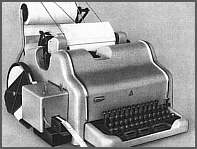
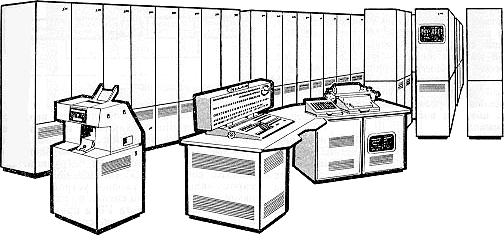
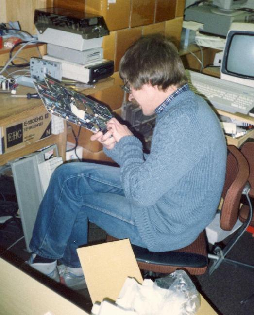
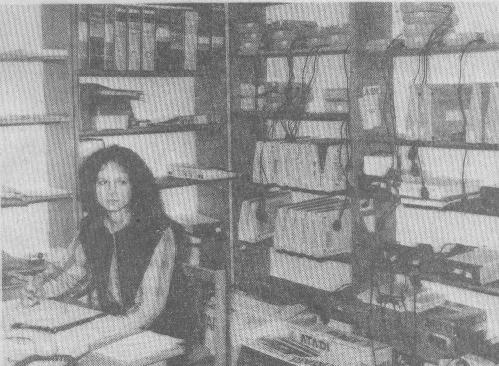
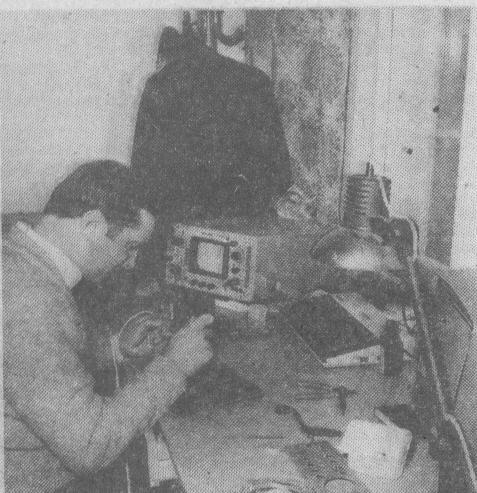

Zastanawiam siê, sk±d u mnie takie
zainteresowanie z³omem komputerowym? Nostalgia? Mo¿liwe... Ale chyba bardzo du¿o w tym
jest wrêcz zwierzêcej ciekawo¶ci...

Co tam w ¶rodku mo¿e byæ? To jest takie du¿e...
Tr±ci myszk±... Dziwne... Baaardzo dziwne.
Moja komputeryzacja
Ods³ona I
Moja pierwsza przygoda z
komputerem mia³a miejsce w 1967 roku. By³em wówczas studentem II roku Wydzia³u Elektromechanicznego Wojskowej
Akademii Technicznej. W podziemiach g³ównego budynku zainstalowany by³ ogromny komputer o d¼wiêcznej nazwie
URAL. Gdy przechodzi³o siê obok tego budynku w oknach widaæ by³o roz¿arzone lampy, by³ to bowiem komputer
lampowy jeszcze, przynajmniej czê¶ciowo. W tym czasie mieli¶my zajêcia z przedmiotu, który teraz zwa³by siê informatyk±, ale wówczas mia³ nazwê "Maszyny Matematyczne".
W zakres tego przedmiotu wchodzi³a nauka jêzyka programowania Algol 60. Jedno z æwiczeñ przewidywa³o
napisanie programu maj±cego obliczyæ warto¶ci jakiej¶ skomplikowanej funkcji z sinusami hiperbolicznymi i
innymi szykanami. Zostali¶my podzieleni na kilkuosobowe grupy i, jak zwykle w ostatniej chwili, zebrali¶my
siê do pisania programu. Burza mózgów trwa³a kilka godzin i jej wynikiem by³ program napisany na kartce.
Nastêpnego dnia, a by³a to sobota (gdy¿ tylko wtedy mo¿na by³o siê dorwaæ do komputera), z rana pojawili¶my
siê w podziemiach, aby zmusiæ komputer do dzia³ania. Najlepiej by³oby, ¿eby dzia³a³ zgodnie z naszym
programem, ale jak siê okaza³o, nie by³o to takie proste.
Najpierw nale¿a³o wklepaæ program na klawiaturze dalekopisu po³±czonego z dziurkark±,
w wyniku czego otrzymali¶my d³ugi na ok. 1,5m pasek papieru podziurkowany w najró¿niejsze wzorki (patrz zdjêcia).

Dalekopis z dziurkark± ta¶my
Pasek ten przekazali¶my technikowi obs³uguj±cemu ca³± tê maszyneriê. Wetkn±³ on go pod jak±¶ klapkê na skrzynce
wielko¶ci lodówki, co¶ tam nacisn±³ i pasek zacz±³ znikaæ w trzewiach maszyny w towarzystwie bzykniêæ,
stukañ i skrzypieñ. Niestety, zapali³a siê lampka b³êdu. Technik zacz±³ przegl±daæ wydruk naszego programu
na papierze i stwierdzi³, ¿e panowie maj± tylko fiub¼dziu w g³owie i zamiast "pisz" napisali "picz".
Ale nic to, zaraz siê poprawi. Wyj±³ misterne, rêcznej roboty urz±dzonko do robienia dziurek i w jednym
miejscu paska dorobi³ dziurkê. Pasek znów wetkn±³ pod klapkê, bzykanie siê powtórzy³o, a¿ w pewnej chwili
skrzynka zrobi³a "ziiiiiip" i ze specjalnej dziury wystrzeli³ z wielk± szybko¶ci± inny pasek, d³ugi
ju¿ na jakie¶ 5m, i majestatycznie opad³ na pod³ogê. Skrzynka bowiem zwa³a siê TRANSLATOREM, a jej
zadaniem by³o przet³umaczenie naszego wierszyka na kod maszynowy komputera. Z naszych "m³odych piersi siê
wyrwa³o" westchnienie ulgi. Przedwczesne jednak, jak siê pó¿niej okaza³o. Technik bowiem wtkn±³ ten drugi
pasek pod inn± klapkê, czyli wprowadzi³ kod maszynowy programu do komputera. Przewidywali¶my, ¿e teraz
komputer za¶wieci siê, zga¶nie na zawsze i na Ziemi zapanuje wieczny pokój, ale nic siê nie sta³o. To
"nic" mocno zaniepokoi³o za¶ technika.

Komputer URAL16
Rzuci³ fachowym okiem na tablicê ze ¶wiate³kami (¿adnych monitorów jak teraz tam nie by³o) i stwierdzi³ krótko: dzielenie przez zero. Tu wtr±ci³ siê nasz asystent mówi±c, ¿e to niemo¿liwe, bo to æwiczenie
wychodzi³o zawsze bez problemu. Zaczê³o siê analizowanie naszej funkcji. Po chwili ju¿ znali¶my
przyczynê: X by³ w mianowniku, a komputer mia³ obliczyæ warto¶ci funkcji od X=0 do ile¶ tam. Asystent
pokrêci³ z niedowierzaniem g³ow±, ale machn±³ rêk± i mówi: "Niech w takim razie liczy od X=0,1."
Zabrali¶my siê szparko do roboty, zmienili¶my co trzeba w programie i pandemonium zaczê³o siê od nowa.
Tym razem posz³o g³adko, a wynikiem pracy komputera by³ kolejny pasek papieru. Wetknêli¶my go do czytnika dalekopisu i na papierze pojawiaæ siê zaczê³y warto¶ci funkcji. Po chwili wydruk by³ gotowy. Asystent zacz±³ go przegl±daæ i stwierdzi³,
¿e takich warto¶ci nie uznaje i æwiczenia nie zaliczy. Co¶ tu nie gra. Technicy byli ju¿ w¶ciekli, a szczególnie taka jedna pani magister, bo zrobi³o siê pó¼no i chcieli i¶æ do domu. Zaczê³o siê analizowanie wszystkiego i po kilkunastu minutach pani magister pyta nas, jaki jest wzór na sinus hiperboliczny, bo taki, jakiego
u¿yli¶my "có¶ jej, kurna, nie kunweniuje, w ¿yciu takiego wzoru nie widzia³a i widzieæ wiêcej nie chce".
W te pêdy do ksi±¿ek i rzeczywi¶cie, wymy¶lili¶my ca³kiem nowy wzór. Ju¿ chcieli¶my lecieæ go opatentowaæ,
ale nasze zapêdy ostudzi³ asystent mówi±c: do roboty. Tym razem sprê¿yli¶my siê i przy nieustaj±cym dopingu ca³ej ekipy technicznej po godzinie wydruk warto¶ci funkcji by³ gotowy. Wyszli¶my z podziemi po dziesiêciu godzinach!
Po tej przygodzie komputery nam obrzyd³y na d³ugi czas. A gdy po latach og³oszono prawa niejakiego Murphy'ego, z których jedno g³osi³o, ¿e "W ka¿dym rachunku liczba, której warto¶æ jest dla wszystkich oczywista, stanie
siê ¼ród³em b³êdu", by³em pe³en podziwu dla tego go¶cia. Sk±d on móg³ siê dowiedzieæ o naszych wyczynach??? Mo¿e doniós³ mu wywiad amerykañski?
Ods³ona II
Mija³y lata. Nadszed³ i przemin±³ stan wojenny i na rynku pojawiaæ siê zaczê³y ró¿ne
czasopisma, m.in. Audio Video. Tam w³a¶nie przeczyta³em wiadomo¶æ, ¿e bêd± publikowaæ schematy i opis komputera COBRA 1 do samodzielnego monta¿u.
Ale jak to nasi - zaczêli od dywagacji na temat wyboru procesora, ble ble ble, lista kodów procesora Z80, ble ble ble, i tak minê³o pó³tora roku zanim pokaza³y siê schematy. Oczywi¶cie pierwszy pojawi³ siê zasilacz. Mo¿na sobie wyobraziæ hordy zapaleñców (w tym i ja) kln±ce na czym ¶wiat stoi, bo AV by³o kwartalnikiem. Pó¼niej trochê przyspieszy³o, ale wówczas ju¿ by³o "po herbacie", bo na rynku pojawi³y siê Commodory, Timexy i Atari i bez ³aski mo¿na by³o sobie kupiæ komputer za 4 - 5 pensji.
Nadszed³ wreszcie rok 1986. Porzuci³em wtedy by³em zawodow± s³u¿bê w wojsku i za po³owê odprawy kupi³em Atari 800XL z d¿ojstikiem, bo magnetofon 1010 kosztowa³ wtedy 1/3 ceny komputera, czyli 48 dolarów (a trzeba dodaæ, ¿e na czarnym rynku 1$ kosztowa³ wtedy 60z³ przy zarobkach 2 - 3 tysi±ce miesiêcznie). W M³odym Techniku wyczyta³em, ¿e kto¶ obznajomiony z elektronik±, a za takiego siê uwa¿a³em, potrafi go sobie zrobiæ ze zwyk³ego magnetofonu. Z³apa³em swojego Kaprala, rozbebeszy³em i zaczê³o siê...
Kombinowa³em jak tylko mog³em, wyostrza³em zbocza impulsów do granic niemo¿liwo¶ci, a magnetofon nie czyta³. W koñcu, w piêkny kwietniowy poniedzia³ek, wybra³em siê do serwisu Atari na Obroñców w Warszawie i tam bardzo mi³y Pan Zygmunt Boguszewski po¿yczy³ mi schemat magnetofonu 1010. Schemat mia³em zwróciæ w czwartek, ale to by³ 1 Maja,
wiêc zwróci³em w pi±tek. Ca³y ten czas przesiedzia³em w domu z lutownic±. Jak siê pó¼niej okaza³o, by³ to czas Czarnobyla.
Podczas drugiej bytno¶ci w serwisie zapyta³em, czy czasem nie potrzebuj± pracownika do serwisu. Potrzebowali, ale trochê pó¼niej.
Umówili¶my siê na 1 sierpnia i z t± dat± zaczê³a siê moja praca w PZ Karen. Pozna³em nowych ludzi:
W serwisie szefem by³ p. Zygmunt Boguszewski, specjalistami Tadek Pêkacz, nie¿yj±cy ju¿ Piotrek Marciniak, Mariusz Pê¶ko i ja. Pó¿niej doszlusowa³ jeszcze Jurek Szutkowski.
P. Joasia Barañska przyjmowa³a sprzêt do naprawy - pracowa³a na Atari 800XL ze stacj± 1050 i drukark± 1029 z programem Synfile+.
Pocz±tkowo naprawia³em magnetofony 1010 i XC12. Naprawa 1010 polega³a na wymianie nagminnie ³ami±cych siê klawiszy, a
XC12 - na regulacji obrotów silnika. Z tymi ostatnimi by³y same k³opoty. Mia³y ¼le zestrojon± elektronikê i po regulacji obrotów czyta³y kasety z wypo¿yczalni, ale nie chcia³y czytaæ w³asnych nagrañ. Nic dziwnego, ¿e by³o mnóstwo reklamacji. Nied³ugo potem zacz±³em naprawiaæ komputery i stacje dysków. By³em pocz±tkowo bardzo z siebie dumny, ale szybko mi to spowszednia³o.
Pewex sprzedawa³ coraz wiêcej komputerów, pojawi³a siê seria ST, a tak¿e 130XE i 65XE, drukarki 1029, w koñcu XE System, modem XMM301 i 80-kolumnowy interfejs XEP-80. By³o du¿o pracy, pojawili siê nowi koledzy: Wojtek Grudziñski i Piotrek ¯emek (*EMEK), który na zdjêciu "walczy" z p³yt± 1040 ST.

Popsu³o siê ST...
W tym te¿ czasie kupi³em od znajomego za niewielk± sumê uszkodzony komputer Commodore +4. Okaza³o siê, ¿e uszkodzona by³a pamiêæ. Wtedy te¿ postanowi³em stworzyæ kolekcjê o¶miobitowców. Pocz±tki by³y trudne, bo ceny by³y wysokie, ale po jakim¶ czasie kolekcja znacznie siê rozros³a: Osiem Bitów.
W koñcu 1987r.o¶miobitow± czê¶æ serwisu Karen przeniesiono do Sulejówka, do wynajêtej willi. Do pracowników do³±czy³ Mariusz Geisler. Trwa³a te¿ budowa przysz³ej siedziby firmy w Sulejówku przy zachodnim przeje¼dzie kolejowym. Zaczê³y siê k³opoty z dojazdami, bo mieszkam w Twierdzy Modliñskiej, obecnej dzielnicy Nowego Dworu Mazowieckiego. Na szczê¶cie punkt przyjêæ serwisu pozosta³ na starym miejscu, i od czasu do czasu mia³em ten komfort, ¿e przez tydzieñ by³em "alarmowym" serwisantem (serwisist±, jak pisa³ Roland Wac³awek). Pewnego dnia wpad³ tam red. Wies³aw Cetera po materia³ do X-a. "X" by³ to po¶wiêcony komputerom Atari i Spectrum dodatek do "¯o³nierza Wolno¶ci", gazety ogólnowojskowej, któr± ka¿dy ¿o³nierz zawodowy mia³ obowi±zek prenumerowaæ. Ostatnio wpad³ mi w rêce zeszyt nr 4, a w nim na ostatniej stronie...

Joasia Barañska na swym stanowisku...

i ja na swoim.
Tak, w³a¶nie wtedy zosta³y zrobione te zdjêcia. S± nienajlepszej jako¶ci, bo zosta³y zeskanowane z gazetowego papieru. Na pierwszym z nich mo¿na obejrzeæ "plon" jednego dnia przyjêæ (nie Joasia, a to co za ni± na pó³kach). Na drugim to ja we w³asnej osobie biedzê siê nad p³yt± komputera z lutownic± w jednej i "odcycaczem" w drugiej rêce.
Zdjêcia zosta³y opatrzone podpisem nastêpuj±cej tre¶ci:
"KAREN - to w³a¶nie tu mo¿na naprawiæ ka¿dy typ Atari. Tu trafiaj± uszkodzone komputery z ca³ej Polski, bowiem w³a¶nie KAREN prowadzi naprawy gwarancyjne tych mikrokomputerów (ale najczê¶ciej psuj± siê siê wra¿liwe magnetofony). Ludzie z tej firmy dbaj± jednak nie tylko o zepsuty sprzêt, ale zabiegaj±, aby by³ przede wszystkim dobrze eksploatowany."
Czas - jak to czas - up³ywa³ szybko, jeszcze szybciej rozwija³y siê komputery. "Karen" przeniós³ siê w koñcu do Sulejówka i musia³em siê z t± firm± rozstaæ. By³ czerwiec roku 1988, pojawi³y siê pierwsze oznaki nadchodz±cych przemian. Do³±czy³em do czo³ówki i za³o¿y³em w³asn± firmê. Prowadzi³em kupno - sprzeda¿ i serwis komputerów przy ul. Globusowej w Warszawie.
Powoli zdobywa³em do¶wiadczenie w dziwnych realiach tamtego czasu. Pecety przywozili ludzie z zachodu w czê¶ciach. Kupowa³o sie je od nich na podstawie umowy kupna-sprzeda¿y, sk³ada³o siê komputer (286 12MHz 1MB Ram, 20 MB HDD, monitor EGA to by³a wystrza³owa konfiguracja) i sprzedawa³o siê ca³o¶æ za niez³± sumkê. Nadal te¿ ludzie przywozili Atari, Commodore itp., najczê¶ciej uszkodzone. Interes siê krêci³.
Nagle w³a¶ciciel lokalu zacz±³ podnosiæ czynsz i zysk spad³ tak, ¿e ca³y interes przestawa³ siê op³acaæ. Trzeba by³o pomy¶leæ o zmniejszeniu kosztów, wiêc firmê przenios³em do siebie do domu, ograniczaj±c tym samym liczbê klientów do praktycznie jednego. Przywozi³ on z zachodu ró¿ne komputery, magnetowidy, kuchnie mikrofalowe i inne rzeczy, wiêc mu to serwisowa³em i jako¶ to sz³o do czasu, gdy przysz³o nowe i zaczê³y siê reformy i szalej±ca inflacja. W tym czasie czê¶æ serwisu Karen znalaz³a siê na ul. Przemyskiej. W po³owie 1991 wróci³em do Karen, lecz na krótko, bo wtedy ju¿ firma ledwie dysza³a. Po pó³ roku siê rozstali¶my, ale serwis przejê³a Joasia i w cztery osoby naprawiali¶my pewexowski sprzêt zalegaj±cy magazyny. W po³owie 1992r. zakoñczyli¶my to dzie³o i rozsta³em siê na dobre z serwisem Atari. Potem znów zaanga¿owa³em siê w pecetowe sk³adactwo a¿ do wrze¶nia 1997, kiedy to... wrócilem do !Karen. Tym razem jednak ju¿ nie Atari by³o przedmiotem serwisu, ale notebooki. W pa¼dzierniku 1998r. wyjecha³em s³u¿bowo do Suwa³k, gdzie uruchamia³em liniê monta¿ow± notebooków California Access. Po roku powróci³em na poprzednie stanowisko i z koñcem roku 1999 zosta³em zwolniony na dogodnych warunkach.
Trochê poby³em emerytem, ima³em siê prac dorywczych, ¿eby dorobiæ do emeryturki, a w 2004 zaczepi³em siê jako serwisista
w nieistniej±cej ju¿ firmie S&T, gdzie pracowa³em do koñca 2022 roku. Teraz jestem emerytem pe³n± gêb± i latam po lekarzach.
Ci±g dalszy nast±pi? Mo¿e...
Aktualizowano 10 VIII 2024
|
POCZ±TEK |
HISTORIA |
MUZEUM |
SCHEMATY |
SERWIS |
|
LITERATURA |
O MNIE |
|